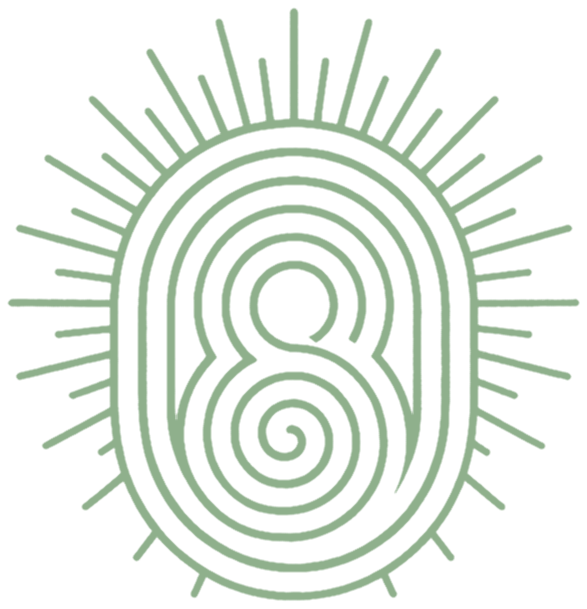
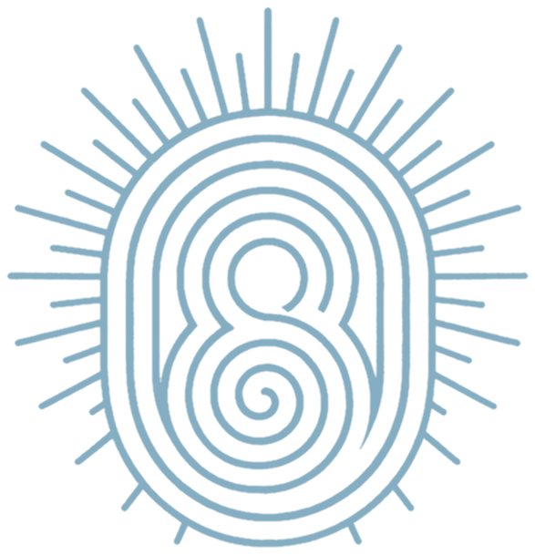

KOWI SEI
Tierra Sagrada
Manual de Marca · Primera Edición
Contenido
01
La Marca
04
05
Fotografía
35
02
Logo
12
06
Elementos Gráficos
50
03
Color
24
07
Aplicaciones
55
04
Tipografía
29
08
Movimiento
62
Kowi Sei — Manual de Marca
02
01
LA MARCA
Lo que este lugar cree, cómo habla y cómo se comporta.
01 · La Marca — Manifiesto
LA TIERRA ESTABA COMPLETA
MUCHO ANTES
DE SER MEDIDA
MUCHO ANTES
DE SER MEDIDA
Los lugares sagrados suelen ser viejos. Se ganan la palabra despacio, a lo largo de siglos de haber sido dejados en paz. KOWI SEI no tiene siglos. Tiene una decisión.
La tierra se vuelve valiosa cuando alguien la trata como algo más que metros cuadrados para subdividir. Proteger lo que merece protección. Construir con cuidado. Cumplir la promesa mucho después de firmar la venta.
04
TIERRA SAGRADA
CERCA DE CARTAGENA
CERCA DE CARTAGENA
Un proyecto de baja densidad donde la arquitectura, la naturaleza y la propiedad se organizan alrededor del espacio, la calma y la permanencia. Lo que se vende es propiedad. Lo que la hace valer es el lugar.
KM 35 · Vía al Mar
Arroyo Grande
Frente al Mar
01 · La Marca — Qué es KOWI SEI
05
LO SAGRADO NO ES LO QUE SE CONSTRUYE.
ES LO QUE SE DECIDE NO TOCAR.
ES LO QUE SE DECIDE NO TOCAR.
01 · La Marca — Personalidad
ARRAIGADO
Cómo nos vemos
Las estructuras se posan dentro de la vegetación, nunca sobre un lote despejado; los materiales vienen del lugar o envejecen hacia él.
Cómo hablamos
Nombramos el terreno, la distancia, el material, la hora.
Cómo actuamos
Protegemos antes de construir; lo intocado se decide primero y no se mueve.
PRECISO
Cómo nos vemos
Un solo sistema de materiales, sostenido en cada imagen — madera curtida, vidrio de marco oscuro, palma gruesa, deck refinado.
Cómo hablamos
Medidos, nunca inflados; cuando algo no está construido, decimos en qué etapa está.
Cómo actuamos
Corregimos en vez de reemplazar; refinamiento antes que volumen.
SIN PRISA
Cómo nos vemos
Espacio alrededor de todo; un solo sujeto por cuadro.
Cómo hablamos
Frases cortas, puntos finales, nada empuja.
Cómo actuamos
Mostramos el proceso en vez de la promesa y dejamos que el lugar haga el argumento.
07
01 · La Marca — La Voz
Segura (nunca arrogante)
Específica (nunca decorativa)
Tranquila (nunca floja)
Directa (nunca brusca)
Cálida (nunca sentimental)
Precisa (nunca fría)
Clara (siempre)
Las tres leyes de escritura
Nombrar cosas reales antes que adjetivos — tierra, agua, sombra, distancia, materiales, decisiones.
Cuando algo todavía no es cierto, decir en qué etapa está en vez de disfrazarlo.
Ningún adjetivo hace el trabajo de un sustantivo.
08
01 · La Marca — Vocabulario
TIERRA · AGUA · MAR · COSTA · BRISA · SOMBRA · ESPACIO · QUIETUD · DISTANCIA · ORIGEN · PERMANENCIA · REGRESO · REFUGIO · VIDA · NATURALEZA
Escapa del caos
A cuarenta minutos de Cartagena.
Una experiencia única
Doce lotes. Ninguno se repite.
Reconecta con la naturaleza
La vegetación llega hasta el deck.
Inversión segura
Etapa 1 · 38 lotes · entrega 2027.
Lujo exclusivo
Madera curtida, vidrio oscuro, palma.
09
01 · La Marca — Kit Visual
1
Lo intocado es el producto.
2
Todo material debe verse mejor a los diez años que el día en que se instaló.
3
La sombra es área de piso.
4
La distancia se mide en metros, no en adjetivos.
5
La llegada se compone, no se acorta.
6
La marca es discreta; el lugar habla.
La Marca
La Paleta
AA
Aa
La Tipografía
La Fotografía
El Elemento Gráfico
El Layout
10
02
LOGO
La marca, sus versiones y las reglas que la mantienen quieta.
02 · Logo — Logo Completo

El arte maestro, del archivo de logo del proyecto — nunca redibujado
12
02 · Logo — Jerarquía de Versiones
Apilado — Principal
Horizontal — Secundario


Vertical — Terciario
13
02 · Logo — Solo el Símbolo
El símbolo va solo una vez el nombre está establecido
Contenedores de avatar — círculo · redondeado · cuadrado
14
02 · Logo — Reducción de Uso Pequeño
96PX
56PX
32PX
16PX — MÍNIMO
Serie de reducción — el detalle aguanta hasta dieciséis píxeles
Ícono de app

KOWI SEI
Favicon · 16px
Ícono de app y favicon
15
02 · Logo — Uso Sobre Fondos
Negro cálido — Oro
Negro puro — Oro


Crema — Oro tinta
Blanco — Oro tinta

Negro bosque — Manglar

Agua profunda — Marea


Crema — Manglar tinta


Crema — Marea tinta
16
02 · Logo — Usos a Una Tinta

Una tinta en negro — impresión, fax, grabado


Una tinta en blanco — invertido, vidrio grabado
17
02 · Logo — Área de Reserva
X
X
X
X
ZONA DE EXCLUSIÓN
X equivale a un cuarto del ancho del símbolo. Nada entra en la zona — ni texto, ni filete, ni borde de marco.
18
02 · Logo — Tamaños Mínimos
MOSTRADO A ESCALA REAL
Símbolo — 16px · 4mm
MOSTRADO A ESCALA REAL
Horizontal — 28px · 8mm
MOSTRADO A ESCALA REAL · 90PX TOTAL
Apilado — 90px · 25mm
19
02 · Logo — Uso Incorrecto
Nunca estirar ni condensar
Nunca rotar
Nunca recolorear fuera del sistema
Sin brillos ni efectos
Sin fondos de color cargados
Nunca oro brillante sobre blanco — solo oro tinta
20
02 · Logo — Firma Sacred Land
Sacred Land
Fondo oscuro — apilado
Sacred Land
Fondo claro — horizontal
21
02 · Logo — Firma Tierra Sagrada
Tierra Sagrada
Fondo oscuro — apilado
Tierra Sagrada
Fondo claro — horizontal
22
03
COLOR
Cinco colores, un fondo, y un oro que nunca rellena.
03 · Color — La Paleta Equilibrada
CALIZA
#F2ECDC · RGB 242 236 220 · CMYK 0 2 9 5
El fondo. Toda página empieza aquí.
CARBÓN
#14110B · RGB 20 17 11 · CMYK 0 15 45 92
Texto sobre claro. Negro cálido, nunca puro.
MAREA PROFUNDA
#2E5468 · RGB 46 84 104 · CMYK 56 19 0 59
Lidera. Titulares, estructura, acciones principales.
MANGLAR PROFUNDO
#3A5C42 · RGB 58 92 66 · CMYK 37 0 28 64
Apoya. Referencias de tierra, superficies secundarias.
AGUA PROFUNDA
#0A121A · RGB 10 18 26 · CMYK 62 31 0 90
El fondo oscuro. Momentos ceremoniales y noche.
ORO SAGRADO
#C9A24B · RGB 201 162 75 · CMYK 0 19 63 21
Solo el logo y los filetes. Nunca un relleno.
24
03 · Color — Proporción y Jerarquía
Caliza · 45
Carbón · 15
Manglar · 15
Marea · 15
Oro · 10
Jerarquía de acentos
Manglar carga la estructura — fondos de sección, superficies secundarias, referencias de tierra.
Oro es un momento ceremonial por layout — un filete, un umbral, la marca misma.
Marea lidera — titulares, referencias de agua, enlaces discretos y acciones principales.
25
03 · Color — Combinaciones Aprobadas
FONDO CLARO
Carbón carga el texto. Marea lidera el titular. Manglar sostiene superficies secundarias y etiquetas.
Etiqueta manglar · apoyo discreto
FONDO OSCURO
Caliza carga el texto. Oro aparece una vez, como filete. Nada más compite con la noche.
Etiqueta caliza · 70 por ciento
Reserva una visita
Solicita la ficha del lote
Etapa 1
38 lotes · KM 35
El oro es solo un filete fino — nunca un botón, nunca datos.
Botones · Etiquetas · Datos
26
03 · Color — Uso Incorrecto
Nunca degradados
Nunca un color fuera del sistema
Reserva una visita
Nunca oro como relleno
38 LOTES
Nunca oro cargando datos
La tierra estaba completa mucho antes de ser medida.
Nunca más de dos colores en un bloque de texto
SACRED LAND
Nunca marea sobre manglar
27
04
TIPOGRAFÍA
Dos tipografías. Los titulares esperan; el texto habla.
04 · Tipografía — Cinzel
Cinzel
Solo titulares · Siempre en mayúsculas
ABCDEFGHIJKLM
NOPQRSTUVWXYZ
NOPQRSTUVWXYZ
0 1 2 3 4 5 6 7 8 9 & · —
29
04 · Tipografía — Marcellus
Marcellus
Todo lo demás
ABCDEFGHIJKLMNOPQRSTUVWXYZ
abcdefghijklmnopqrstuvwxyz
0 1 2 3 4 5 6 7 8 9 — cifras alineadas
30
04 · Tipografía — La Escala
H1 · Cinzel 64/76 +80
LA TIERRA ESTABA COMPLETA
H2 · Cinzel 40/48 +60
TIERRA SAGRADA CERCA DE CARTAGENA
H3 · Cinzel 28/34 +50
LA COSTA CON LA PRIMERA LUZ
Etiqueta · Marcellus 12/16 +120
Cómo nos vemos · Cómo hablamos · Cómo actuamos
Texto · Marcellus 17/28
La tierra se vuelve valiosa cuando alguien la trata como algo más que metros cuadrados para subdividir. Proteger lo que merece protección. Construir con cuidado.
Botón · Marcellus 15/20 +20
Reserva una visita
Etiqueta · Marcellus 12/16 +40
Etapa 1 · Frente al mar
Datos · Marcellus 32/38
38 lotes · KM 35 · 2027
Pie · Marcellus 11/16 +100
La costa con la primera luz, vista desde el umbral
Ninguna línea supera los 65 caracteres.
31
04 · Tipografía — Los Finalistas Aprobados
TIERRA SAGRADA
LA TIERRA SOSTIENE SU LUGAR
H1 y H2 — el finalista aprobado, recompuesto del archivo de tipografía
LA MAREA LLEGA SIN PRISA.
Cita destacada — Cinzel sobre agua profunda, tick de oro
32
04 · Tipografía — Estilos Editoriales
Capítulo 02 · La Tierra
Pie de propiedad · Kowi Natura, vista desde la loma oriental, Etapa 1
Antetítulo · Pie
The tide arrives without hurry.
La marea llega sin prisa.
Par de pies bilingües
Á É Í Ó Ú Ñ Ü
á é í ó ú ñ ü · ¿Dónde? ¡Aquí!
Soporte de español — ambas fuentes llevan acentos completos
Sacred Land · Km 35
KOWI SEI sostiene tierra que siempre fue sagrada. Espacio, permanencia y peso sereno, a una hora de Cartagena.
Etiqueta · Texto
33
05
FOTOGRAFÍA
Un elemento construido contra tierra sin construir, en el mismo cuadro.
05 · Fotografía — Panorama
UN ELEMENTO CONSTRUIDO CONTRA TIERRA SIN CONSTRUIR, EN EL MISMO CUADRO.
Cuatro categorías. Toda imagen obedece la ley de composición; cada categoría tiene su propia lista.
35
TIERRA
· La vegetación domina el cuadro
· Sin terreno sobre-despejado
· Los senderos se leen como parte del terreno
05 · Fotografía — Tierra
36
Tierra — La laguna al atardecer
37
Tierra — La laguna
38
AGUA
· El mar se lee plano y plateado con la primera luz
· Playa con arena amplia y usable
· Piscinas de inmersión, nunca piscinas grandes
05 · Fotografía — Agua
39
Agua — La playa
40
Agua — La orilla amplia
41
SOMBRA
· La sombra es el sujeto, no el fondo
· Interiores cálidos con luz natural
· Sin interiores poco diseñados
05 · Fotografía — Sombra
42
Sombra — La habitación
43
Sombra — El corredor
44
VIDA
· Siempre un elemento de vida en el cuadro
· Nunca posado
· La noche iluminada desde adentro, nunca con reflectores
05 · Fotografía — Vida
45
Vida — El día que termina
47
05 · Fotografía — Uso Incorrecto
Inconsistencia de techos
Inconsistencia de madera
Inconsistencia de base del bungalow
Playa demasiado angosta
Relieves falsos de fondo
Etalonaje sobre-cálido
48
06
ELEMENTOS GRÁFICOS
Todo deriva de la geometría de la marca. Nada se inventa.
06 · Elementos Gráficos — El Filete
EL FILETE
Los trazos radiales del símbolo, aislados como una fila corta de filetes de oro. Tres funciones, tres escalas.
Umbral de sección
Divisor de texto
Marca de pie de página
50
06 · Elementos Gráficos — El Marco
EL MARCO
La curva del ovoide exterior como máscara de imagen — base plana, remate en arco. Se usa máximo una vez por página.
51
06 · Elementos Gráficos — El Campo
SOLO TEXTO SERENO —
NUNCA FOTOGRAFÍA, NUNCA DATOS
NUNCA FOTOGRAFÍA, NUNCA DATOS
Carbón sobre caliza · 8 por ciento
EL TRAZADO CONCÉNTRICO,
EXPANDIDO A SANGRE
EXPANDIDO A SANGRE
Caliza sobre agua profunda · 8 por ciento
52
06 · Elementos Gráficos — Uso Incorrecto
Nunca centrado como decoración
Nunca dos recursos en un layout
Nunca el patrón dentro del marco
Nunca recoloreado fuera de oro, carbón, caliza
53
07
APLICACIONES
Cada una es prueba de que el sistema se sostiene.
07 · Aplicaciones — Sitio Web
TIERRA SAGRADA
CERCA DE CARTAGENA
CERCA DE CARTAGENA
Reserva una visita
Hero — la construcción aprobada
DIARIO
El camino de entrada, sin prisa
Notas de campo · 04
Lo que queda sin tocar
Notas de campo · 03
Madera que envejece bien
Materiales · 02
Diario
LOTE 07
2.340 m² · 140 m a la orilla
Etapa 1 · Entrega 2027
Solicita la ficha del lote
Detalle de lote
55
07 · Aplicaciones — Redes
Sacred Land
1080 — Ceremonial
A CUARENTA MINUTOS
DE CARTAGENA
DE CARTAGENA
1080 — Declaración sobre imagen
38 lotes
Etapa 1 · Entrega 2027
1080 — Tarjeta de datos
LA COSTA CON LA PRIMERA LUZ
1080 × 1920 — Historia
56
07 · Aplicaciones — Presentación
Presentación a inversionistas · 2026
Portada
02
LA TIERRA
Sección
LO QUE SE VENDE ES PROPIEDAD
Lo que la hace valer es el lugar. Arquitectura, naturaleza y propiedad organizadas alrededor del espacio y la calma.
Contenido
38
Lotes · Etapa 1
140 m
A la orilla
2027
Entrega
Datos — nunca en oro
57
07 · Aplicaciones — Cerramiento y Señalización
KM 35 · Vía al Mar
Cerramiento — bajo, madera oscura, solo línea de oro
Lote 07
Hito de lote — los mismos materiales que las construcciones
58
07 · Aplicaciones — Kit de Ventas
Carpeta
LOTE 07
2.340 m² · 140 m a la orilla
Etapa 1 · Entrega 2027
KM 35 · Vía al Mar · Arroyo Grande
Ficha de lote
El objeto que queda en manos del comprador — medallón de madera
59
07 · Aplicaciones — Papelería
KOWI SEI · KM 35 Vía al Mar · Arroyo Grande
Membrete — solo filete de oro
Amalia Reyes
Ventas · Tierra Sagrada
a.reyes@kowisei.co · +57 300 000 0000
Tarjeta — frente y reverso
60
08
MOVIMIENTO
Los títulos se desvanecen. Nada entra animado.
08 · Movimiento — Especificaciones de Video
AMALIA REYES
Ventas · Tierra Sagrada
Rótulo inferior — barra agua profunda al 80 por ciento, abajo a la izquierda
Sacred Land
Placa final — cuatro segundos, firma debajo
Marca de agua — solo el símbolo, caliza 40, nunca sobre un rostro
Los títulos se desvanecen — nada entra animado.
62